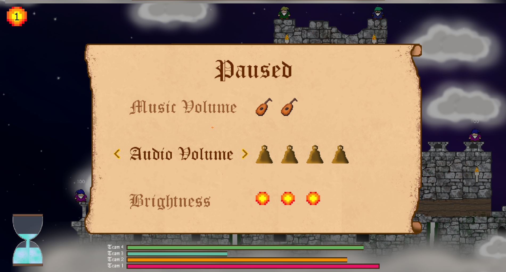

Wizard Grenade was born after challenging myself to recreating a childhood favourite PC game of mine "Worms2".
I developed the game from scratch using only the Monogame open source implementation of the Microsoft XNA 4 framework, to run the game loop and draw the spritebatch
to the screen. The main challenges were to develop a basic physics engine, create destructable and collidable terrain and to finish a playable game
before my arbitrary three month deadline. The game was finished on time but I couldn't help but spend an extra week tweaking some aesthetical elements, and finishing off a basic music score.
This project taught me a lot of important lessons about software architecture, game design and object-oriented programming.
The physics are what really spawned this project - after replaying Worms2 for the first time in years I found the act of throwing and timing the grenade throws so satisfying that I wanted to recreate it myself
Destructable Terrain
The terrain came from this idea.
Menu Tools

Here I want to highlight some non-specific classes or tools I crated to build the menus in the game.
I wanted a simple interface, so I chose to represent all settings graphically with integer steps.
The Setting class was developed to handle this, having both an integer property (e.g number of Wizards in a team), but with the option to calculate a float value if required; for example the "Music Volume" setting shown in the menu above will have a value of 2/5 = 0.4f.
The SpriteMeter class simply prints a number of Sprite objects to the screen separated by an interval; the "SetSpriteMeter()" method in Setting can be used to calculate this interval. I chose to pass the value of the setting directly in the "Draw()" method.
The Options class draws the text options out to the screen. The constructor takes a List<string>, and a 'bool' which determines a vertical or single position layout.
The video clip above demonstrates the difference. I created another class called OptionArrows which will measure the length of the selected 'string' and adjust position.
The Options class also handles changing option with the respective arrow keys (i.e. L/R for single, U/D for vertical) holding the List Index as an integer property.
public classSetting
{
public float Value { get; private set; }
public int IntValue { ; private set; }
public int MinValue { get; private set; }
public int MaxValue { get; private set; }
privateSpriteMeter _spriteMeter;
publicSetting(int initialValue, int minValue, int maxValue)
{
IntValue = initialValue;
MinValue = minValue;
MaxValue = maxValue;
Value = (float)IntValue / (float)MaxValue;
}
...
public void SetSpriteMeter(float maxWidth, float spriteScale)
{
_spriteMeter.Interval = maxWidth / (MaxValue - 1);
_spriteMeter.Sprite.SpriteScale = spriteScale;
}
public void SetValue(int value)
{
IntValue = value >= MaxValue ? MaxValue : value $lt= MinValue ? MinValue : value;
Value = (float)IntValue / (float)MaxValue;
}
public void ChangeValue(int diff) => SetValue(IntValue + diff);
...
}
public classSpriteMeter
{
publicSprite Sprite { get; set; }
public float Interval { get; set; } = 10f;
publicSpriteMeter(ContentManager contentManager, string fileName)
{
Sprite = new Sprite(contentManager, fileName);
}
public void Draw(SpriteBatch spriteBatch, Vector2 position, int value)
{
for (int i = 0; i < value; i++)
Sprite.DrawSprite(spriteBatch, new Vector2(position.X + (i * Interval), position.Y));
}
}
NB// "..." indicates where code was ommitted for brevity
Architecture
WARNING: WALL OF TEXT
You might wonder why this project is "WizardGrenade2" on GitHub - For WG1 I did what all green programmers do and got carried away trying to make things work (i.e make fireballs bounce around) and didn't think about the structure of my program.
I made the rookie error of having my GameObject class handle everything from physics to drawing to collisions; I essentially packed too much functionality into one class which resulted in a very tightly-coupled application. So I started from scratch with more of a plan.
Below is a UML diagram, approximating the architecture of WizardGrenade2. The classes in red are Singletons which I know can be a touchy subject! I decided to use them for classes which would only have a single instance required (such as the StateMachine) and needed to be referenced from multiple different areas of the application - I think I could improve this in the future but this was how I chose to go about it at the time.
The free account on LucidChart restricts the number of objects so it isn't complete but gives the idea, as UML diagrams should. Without describing everything the basic structure is as follows.
WGGame is the main game class. This handles the game loop logic, determines whether we are in the menu, running the game, or if the game is paused. It also contains the CameraManager which determines the origin matrix (i.e. drawing UI, menus) and the transform matrix (i.e. in game)
The GameSetup is a menu where the game options and map are chosen - once selected a small GameOptions class is injected as a constructor to GameScreen along with the ContentManager.
Teams handles the initial placement of the Wizards, and after that polls the StateMachine for the active GameState and determines which Team and Wizard are active.
Each Team has a different Sprite so this is where each Wizard is drawn and where the collective health is tallied. The movement method is only called for the active Wizard of the active Team.
Improving on my last design, the Wizard class handles movement, damage and animation states but has a GameObject (see below). The Wizard also contains an Entity which has health, a "Damage()" method and checks if the Wizard is dead or not.
The GameObject class handles the physics (see Physics) and draws the Sprite at the correct position. In hindsight I could have decoupled this further by containing the Sprite within GameObject rather than inheriting from it.
Another improvement on the first design was having the WeaponManager handle all the weapons and simply draw them at the position of the active Wizard. The WeaponManager is updated by the BattleManager and takes the active wizard position in it's Update() method.
The WeaponManager class is one of the dreaded Singletons which acts as a conduit between the Wizards and the Weapons. The WeaponManager is Lazy Initialised so it is only called once the teams are loaded; a list containing all Wizards is collected by Teams and passed to the WeaponManager. Then when a Weapon explodes near a Wizard the WeaponManager can call AddVelocity() on the Wizard (or any other GameOjbect) and make them react to the explosion
The explosion imparts a velocity value as function of distance from the explosion, which causes variable amounts of damage depending on how close the Wizard was to the explosion
The Weapons are discussed in more detail here (Weapons) but the way each one interacts with Wizards is different, hence they contain virtual methods to be overriden by the specific weapon class